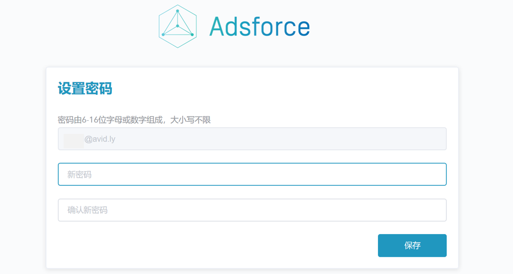
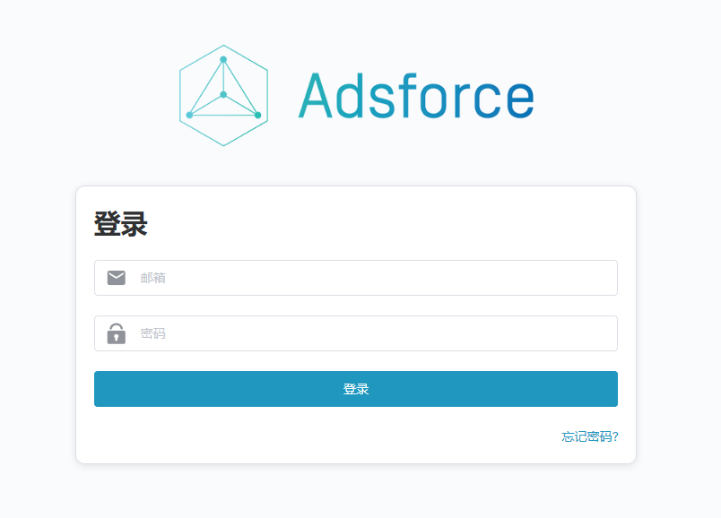

首页
欢迎使用 Adsforce
Adsforce 优势
什么是广告效果分析平台？
了解更多
Adsforce 如何实现效果分析？
入门指南
查看 Demo
选择合作模式及其使用步骤
标准 SaaS 模式
登录 Adsforce
添加新的团队成员
创建应用
下载、集成并测试 SDK
设置媒体平台配置
报表分析
私有化部署
SDK 集成
快速开始
Android SDK
iOS SDK
Unity SDK
发布说明
SDK 设置
渠道追踪配置
Facebook 追踪配置
Facebook 应用编号和密钥
Google AdWords 追踪配置
链接 ID 配置
Vungle 追踪配置
获取应用 ID
获取 API-Key
Applovin 追踪配置
UnityAds 追踪配置
IronSource 追踪配置
Chartboost s2s 追踪配置
Adcolony 追踪配置
Tapjoy 追踪配置
其它
链接配置
链接创建
链接管理
应用内事件
Trackevent API
配置内购事件
事件类型
报告
报告参数
汇总绩效报告
渠道汇总报告
渠道每日汇总报告
每日汇总报告
国家汇总报告
国家+每日汇总报告
原始数据报告
APIs
数据介绍
术语解析
常见问题
本书使用 GitBook 发布
登录 Adsforce
登录 Adsforce
1. 点击接收到的后台初始化链接；
2. 修改密码；

3. 密码修改成功后，自动跳入
登录 Adsforce
页面重新登录；

4. 进入 Adsforce 应用页面。
results matching "
"
No results matching "
"